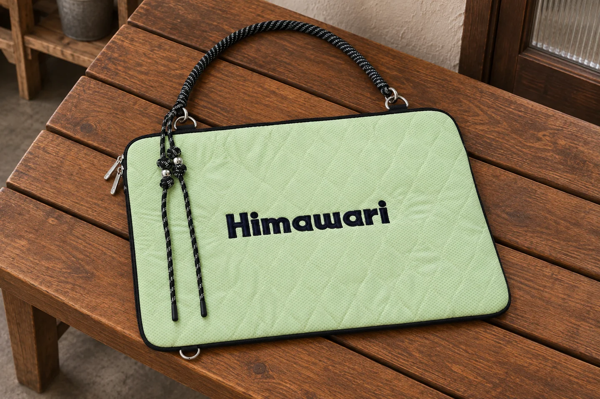
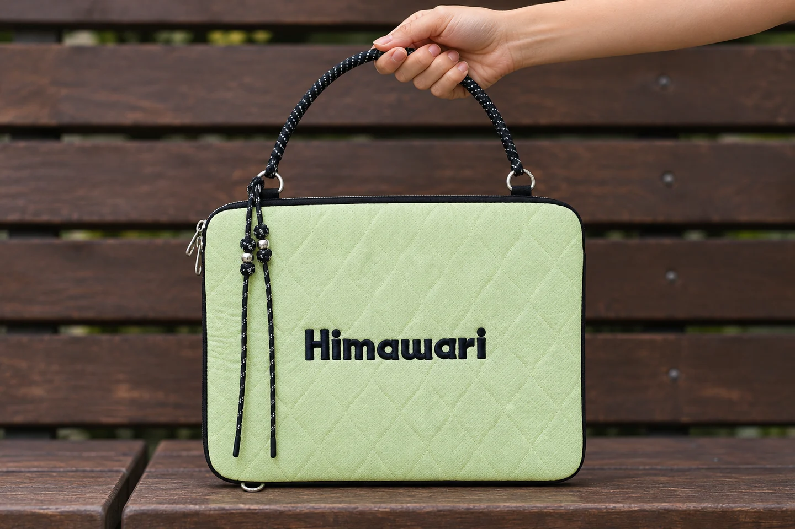
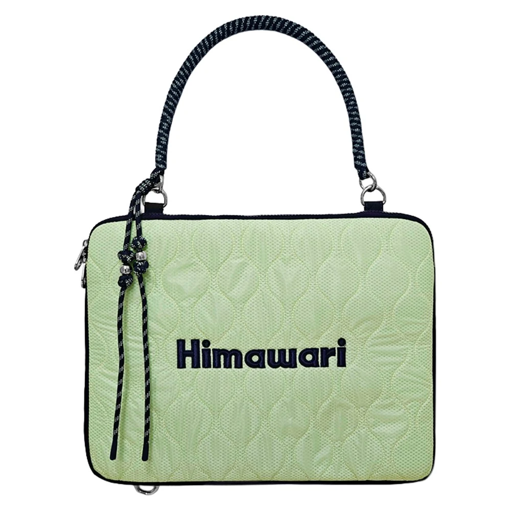

얇은 노트북 파우치를 틈 있는 벤치에 내려놓을 때

두 손에 커피와 노트북 파우치를 들고 도착했습니다. 커피는 잠시 테이블에 두고 옆자리의 나무 벤치에 파우치를 내려놓으려는데 좌판이 여러 판으로 나뉘어 있습니다. 앞면에서 봤을 때 넓은 파우치를 좁은 밑면으로 세우면 실제로 받쳐지는 부분은 몇 손가락 폭도 되지 않을 수 있습니다. No.2513 민트에는 외부 가로 36.5cm, 세로 28cm, 폭 2cm가 안내돼 있습니다. 얇은 폭이 놓을 자리와 어떻게 만나는지 손잡이를 놓기 전부터 따라가 봅니다.
손잡이를 들고 다가갔을 때 먼저 보이는 면
제품 사진에서 연한 민트색 파우치의 넓은 앞면과 검은 둘레를 봅니다. 위에는 양쪽 금속 고리에 매인 짧은 손잡이가 있고 왼쪽에는 긴 장식 끈이 내려옵니다. 이렇게 손잡이로 들면 넓은 면이 세로로 서고 폭이 좁은 밑면이 좌판을 향합니다. 그대로 내려놓는 동작 자체는 쉽지만 좌판이 나무판 여러 개로 나뉘면 아래 변이 어디에 닿는지 손 위에서는 잘 보이지 않을 수 있습니다. 먼저 한 발 옆으로 옮겨 좌판의 선과 파우치 밑면의 방향을 나란히 봅니다.
손잡이를 쥔 채 파우치를 내려보면 둥근 모서리 한쪽이 먼저 나무판에 닿을 수 있습니다. 두 손이 자유롭다면 손잡이를 놓기 전에 다른 손으로 옆을 받칩니다. 한 손만 쓸 수 있을 때에는 굳이 세운 모양으로 끼워 넣을 필요가 없습니다. 한 판 위에 좁은 밑면을 댔는데 바로 옆에 틈이 보이면 다시 들어 둘 곳을 바꿔 볼 수 있습니다. 모서리가 틈 쪽으로 기울면 손잡이를 쥔 채 조금 들어 올립니다. 옆에서 밑면 전체를 한 번 보고 그대로 세워도 될 자리가 있는지 가늠합니다.

손을 놓기 전에 좌판이 받치는 곳을 봅니다
판이 여러 줄 이어지는 긴 벤치에서는 넓은 면이 판 두세 개를 가로지르게 놓을 수 있는 곳이 보입니다. 파우치를 눕히면 좌판에 닿는 곳이 얇은 밑면에서 넓은 몸판으로 바뀝니다. 가방이 좌판 안쪽에 충분히 들어왔는지, 한 모서리만 바깥으로 나와 있는지 손을 놓기 전에 봅니다. 누울 자리가 너무 좁다면 반쯤 걸친 채 두어 균형을 보려 하지 않고 다른 상판을 찾습니다. 내가 옷을 놓거나 옆 사람이 움직일 공간까지 겹친다면 잠깐 쓰는 자리라도 파우치를 올릴 방향을 바꿀 수 있습니다.
위에서 보면 파우치에 가려 좌판 틈이 어디까지 이어지는지 잘 안 보일 수 있습니다. 파우치가 판의 길이를 따라 길게 놓일 때는 테두리가 한 줄 위에 놓일 수 있습니다. 방향을 돌려 판의 이음새를 몇 군데 건너게 두면 받쳐주는 면이 어디인지 확인하기 쉽습니다. 벤치의 짧은 쪽 끝에서 보면 어떤 판이 몸판 아래로 지나가는지 보입니다. 두 판 위에 걸쳤다면 양쪽 판이 모두 몸판 안쪽을 받치는지부터 봅니다. 몸판 한쪽만 판 위에 있고 나머지가 좌판 끝으로 나왔다면 빈 쪽에도 판이 닿도록 파우치를 안으로 옮깁니다. 놓을 동안 한 손이 비어 있다면 손잡이와 옆면을 함께 잡고 방향을 바꿀 수 있습니다. 카탈로그의 폭 2cm는 제품 자체의 외부 치수입니다. 내용물이 들어 있을 때 바닥에 닿는 면은 테두리와 몸판이 불룩해진 정도에 따라 달라집니다.
파우치를 다 내려놓기 전에 손을 조금씩 풀어 봅니다. 한쪽 모서리부터 내려가면 손잡이를 다시 들어 파우치 전체를 옮깁니다. 소지품을 잠깐 올려두는 벤치에서는 틈이 보이는 끝쪽을 피해 안쪽에 놓는 것만으로도 몸판을 더 넓게 받칠 자리를 찾을 수 있습니다.
다시 들 때에는 끈이 남은 곳을 봅니다
파우치를 내려놓은 뒤에는 위쪽 손잡이와 긴 장식 끈이 좌판 사이로 늘어졌는지 봅니다. 실제 제품 사진에서 장식 끈이 달린 위치를 볼 수 있습니다. 몸판이 여러 판에 걸쳐 있어도 끈은 판 사이에 걸릴 수 있습니다. 파우치를 집어 들기 전에 끈 끝이 놓인 곳을 봅니다. 마침 옆자리에 다른 짐이 놓였다면 끈이 가방 아래에 눌렸는지도 확인합니다. 잡아당기면 움직이지 않는 경우에는 몸판을 더 세게 당기지 않고 눈에 보이는 끝부터 살핍니다. 가방을 지지한 채 눌린 곳에서 끈을 빼면 왜 들 때 평소와 다른 느낌이 났는지 알기 쉽습니다.

평평한 상판에 둘 때도 한 번 정리합니다
테이블에서는 좌판 틈이 없더라도 손잡이가 통로 쪽으로 늘어지거나 파우치 모서리가 상판 밖으로 나올 수 있습니다. 가방을 깊이 두고 내용물을 꺼낼 쪽으로 지퍼가 향하게 돌리면 손을 놓은 자리에서 곧바로 열 수 있습니다. 작은 상판을 쓰는 날이라면 음료와 파우치가 같이 놓일 면적도 봅니다. 좌판에 물기가 있거나 손이 닿는 가장자리에 흙이 있다면 상판을 먼저 살펴 두 곳 가운데 마른 쪽을 고릅니다. 넓은 면을 댈 자리를 고른 뒤에 지퍼 손잡이와 장식 끈이 그 자리에 같이 들어오는지도 봅니다. 파우치의 긴 쪽을 의자 뒤 좁은 틈에 세워두는 것과 상판에 넓은 면을 대고 두는 동작은 처음엔 둘 다 간단해 보입니다. 그 자리를 떠나기 전 고리와 끈을 그대로 집을 수 있는 방향을 고르면 다시 들어 올릴 때 움직이는 물건이 줄어듭니다.
어느 자리가 좋을지 계산을 해둬도 실제 좌판 모양은 가서야 보이는 날이 있습니다. 그때는 파우치의 넓은 면이 어느 판 위에 놓이는지와 손을 놓은 뒤 끈 끝이 어디에 있는지 먼저 확인합니다. 한 손에 든 파우치를 잠깐 내려놓는 짧은 동작에서 다 살피기 어렵다면 그 자리를 지나 평평하고 앞뒤가 드러나는 상판을 쓰는 편이 쉽습니다. 손잡이에 다시 손을 넣을 자리를 남겨두면 내려놓는 위치를 바꾼 뒤에도 다음 동작은 비슷하게 이어집니다.